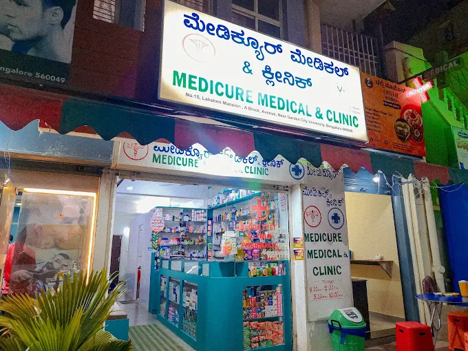
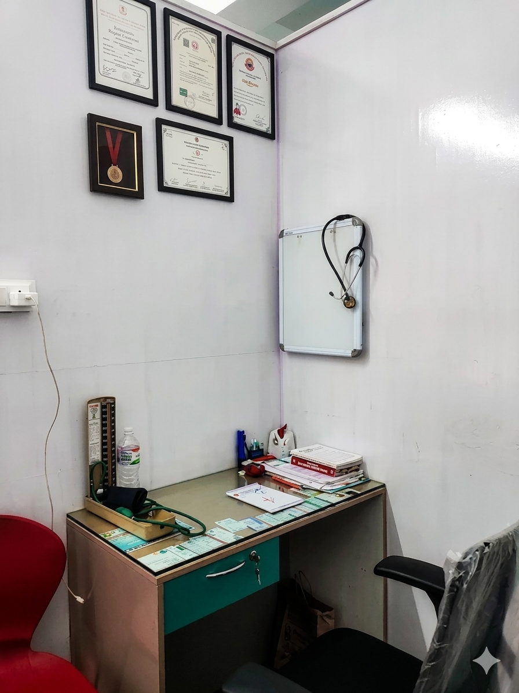

Clinic Hours
8:30 AM - 11:30 PMServing Bhattarahalli & T.C. Palya
A New Standard of Hybrid Care in Your Community.
At Medicure, clear doctor-patient dialogue meets practical everyday healthcare. Visit for family consultations, diagnostics, medicine support, and follow-up care in a calm clinical setting.
Status
Open daily
Convenient Location
Easily accessible in Bhattarahalli.
Care Services
Common health needs, handled in one place.
Medicure combines everyday outpatient care with in-house support services so patients can move from consultation to diagnostics and medicine pickup with less friction.
General Physician
Family-focused consultations for fever, infections, pain, routine checkups, and follow-up care.
Pediatrics
Child health consultations with patient explanations for parents and practical care plans.
Diabetology
Support for sugar control, medication reviews, monitoring routines, and lifestyle guidance.
Physiotherapy
Recovery support for mobility, posture, pain management, and guided rehabilitation needs.
Our Philosophy
Modern reliability meets professional excellence.
The clinic is built around direct communication, clean environments, and practical continuity of care for patients in Bhattarahalli and T.C. Palya.
Doctor-Patient Dialogue
Medical decisions are easier when they are explained clearly. The care model emphasizes transparent diagnosis, treatment options, and patient questions.

Professional Staff
Clinical and support staff focused on timely service and attentive patient handling.
Clinical Hygiene
Clean consultation areas and organized workflows help create a safer, calmer visit.
The Hybrid Care Model
In-person consultations are supported by clear records, follow-up planning, and practical coordination across pharmacy and laboratory needs.
- Clear visit summaries and next steps
- Easy follow-up scheduling
- Integrated pharmacy and diagnostic support
Doctors
Consultations for families, children, and chronic care.
The appointment flow is designed for quick triage and clear care routing. Patients can request the right consultation type and the clinic can confirm the available slot.
Pharmacy
Medicine support after your consultation.
Patients can complete their visit with medicine guidance and prescription support at the clinic, reducing the need for extra stops after consultation.
- Prescription coordination
- Patient-friendly dosage reminders
- Support for routine medicine needs
Patient Reviews
What our patients say about us.
Trusted by hundreds of families in Bhattarahalli and nearby areas.
★★★★★
I had a very good experience at this clinic. The doctors are knowledgeable and attentive, and they take the time to explain everything clearly. The staff is polite, helpful, and supportive.
Brijendra Mishra★★★★★
Very good clinic. Staff behaviour is so good 👍
Siwansh Thapa★★★★★
Thank you so much it was a very good experience over here. I got relief from stomach pain. The doctor provided a good treatment and prescription. I am also satisfied with the fee. This is one of the best clinics.
Rajia Sultana★★★★★
Good experience and very affordable as well.
Migmar Bhuti★★★★★
Great clinic.
Aarushi Vishwakarma★★★★★
Very hygiene clinic and well-trained staff.
Reyaz alam★★★★★
Great experience.
Akshara Singh★★★★★
Always best in their services.
Prabha Sahu★★★★★
I highly recommend Medicure Clinic and Dr. Rehan. The treatment I received was effective and professional. The clinic is well-maintained, and I felt well-cared for throughout my visit.
Tazeem Tazim★★★★★
Very nice place.
Aryan Magar★★★★★
Very good experience. Doctor is so kind and experienced. 10 out of 10.
Ramlalit Singh★★★★★
Nice clinic with good health advice.
Paul Kujur★★★★★
Nice place, good experience. Very good doctor. 5 star.
Amit Singh★★★★★
Best environment and very good doctor behaviour. All staff and medical person behaviour very good. Good place, very hygienic. 10 out of 10.
Kamaladebi Timelsena★★★★★
Excellent service and very professional staff. The doctor was kind, knowledgeable, and explained everything clearly. Clean clinic with great care — highly recommended.
Anowar Hussain★★★★★
Doctors are very polite and caring. With great medication. Very great clinic.
ANTRIKSH GAMER★★★★★
Very Good clinic. Good experience. Staff is very helpful.
Pavitra Parashuvane★★★★★
The staff behaviour is good. The treatment is done very well. They are taking good care of the patient.
Geddada Mounika★★★★★
I went to this clinic last week. It is easily accessible, reasonably priced. Staffs are supportive and kindly behaved. Very good doctor.
Sultan Khan★★★★★
Very experienced and very good doctors. Staff behaviour is very good and clinic is so hygienic and well maintained. From my side it is 5 star.
Afzaal Salmani★★★★★
Very good.
Palvi BourkarContact
Visit Medicure Clinic & Medical in Bhattarahalli.
Address
A Block Avenue, No. 15/16, Lakshmi Mansion, near Garden City University, Bhattarahalli, Bengaluru, Karnataka 560049
Phone
Hours
Open daily, 8:30 AM - 11:30 PM
Emergency Care
For urgent symptoms, visit the clinic directly or contact local emergency services.